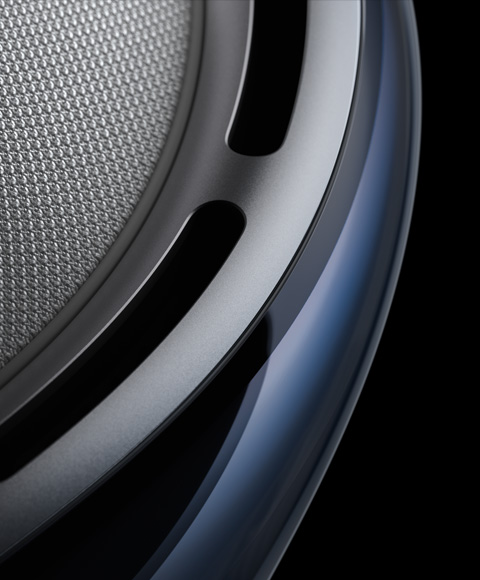
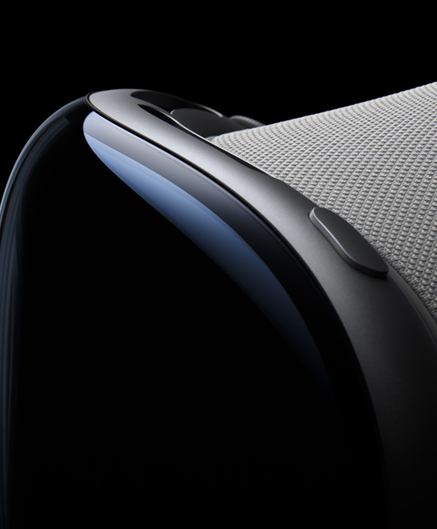

Introducing
Welcome to the era of spatial computing
Apple Vision Pro seamlessly blends
digital content with your physical space
You navigate simply by using your
eyes, hands, and voice.
Watch the film
Watch the event

Apps
Free your desktop.
And your apps will follow
Your apps live in
your space.
With Vision Pro, you have an infinite canvas that transforms
how you use the apps you love. Arrange apps anywhere and
scale them to the perfect size, making the workspace of your
dreams a reality -- all while staying present in the world
around you.Browse the web in Safari, create a to-do list in
Notes, chat in Messasges, and seamlessly mobe between
them with a glance
Entertainment
The ultimate theater.
Wherever you are.
Photos and Videos
Be in the moment.
All over again.
Photos and Videos
Be in the moment.
All over again.
Design
Designed by Apple
Apple Vision Pro is the result of decades of experience designing high‑performance, mobile, and wearable devices — culminating in the most ambitious product Apple has ever created. Apple Vision Pro integrates incredibly advanced technology into an elegant, compact form, resulting in an amazing experience every time you put it on.
Enclosure. A singular piece of three-dimensionally formed laminated glass flows into an aluminum alloy frame that curves to wrap around your face.
Light Seal. The Light Seal gently flexes to conform to your face, delivering a precise fit while blocking out stray light.
Head Band. The Head Band provides cushioning, breathability, and stretch. The Fit Dial lets you adjust Apple Vision Pro precisely to your head.
Power. The external battery supports up to 2 hours of use, and all‑day use when plugged in.1
Sound. Speakers positioned close to your ears deliver rich Spatial Audio while keeping you aware of your surroundings.


A singular piece of three-dimensionally formed laminated glass
acts as an optical surface for the cameras and sensors that view
the world. It flows seamlessly into a custom aluminum alloy frame
that gently curves to wrap around your face while serving as an
attachment point for the Light Seal.

More pixels than a 4K TV. For each eye.
The custom micro‑OLED display system features 23 million pixels,
delivering stunning resolution and colors. And a specially designed
three‑element lens creates the feeling of a display that’s everywhere
you look.
Our most advanced
Dual-driver audio pods positioned next to

Responsive, precision eye tracking
A high-performance eye tracking system of LEDs and infrared
cameras projects invisible light patterns onto each eye. This
advanced system provides ultraprecise input without your needing to
hold any controllers, so you can accurately select elements just by
looking at them.